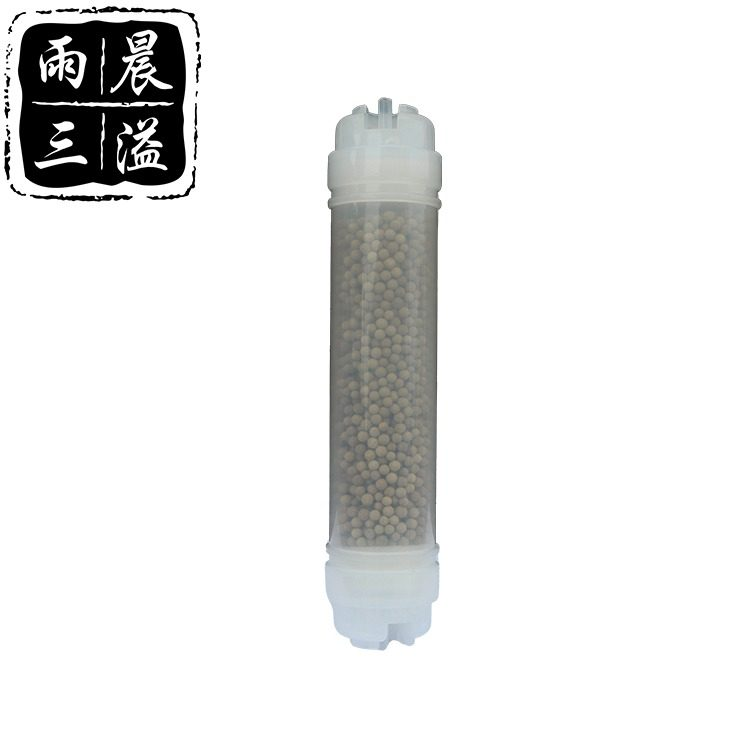

Antibacterial Mineralization Filter Cartridge
Effectively removes harmful bacteria and viruses and adds beneficial minerals. Tukkutoimitus tehtaalta, muokattavissa OEM/ODM-tarp...
Näytä Tiedot →
Inline filter containing Maifan stones to mineralize water and improve taste. Tukkutoimitus tehtaalta, muokattavissa OEM/ODM-tarpeisiin. NSF/ISO-sertifioitu teolliseen ja kaupalliseen vedenkäsittelyyn. Valmistettu 20 000+ m² ISO 9001:2015 -sertifioidussa tehtaassamme Yuanhua Townissa, Hainingissa, Zhejiangissa, Kiinassa, tämä tuote on osa täydellistä vedensuodatusvalikoimaamme — SGS:n riippumattomasti testaama NSF/ANSI 42 & 53 -standardien mukaisesti, CE-merkintä Euroopan tuontivaatimusten mukaisesti ja FDA-laatuiset materiaali-ilmoitukset pyynnöstä. OEM/ODM-yksityismerkkiräätälöinti on saatavilla: brändin painatus, kustomoidut päädyt, värien täsmäytys ja pakkaus. Vakio-MOQ alkaen 1 000 kpl; tukkumyynti FOB Shanghai/Ningbo maksuehdoilla T/T 30/70 tai L/C. Viemme tällä hetkellä yli 50 maahan, mukaan lukien USA, Saksa, Venäjä, Saudi-Arabia, Malesia, Indonesia ja Brasilia, täydellä halal-sertifioinnilla.
| Kotelo | Food-grade PE / PP one-piece sealed body |
|---|---|
| Liitäntä | 1/4" or 3/8" Quick Connect (push-fit) |
| Suodatusmateriaali | Coconut-shell carbon / KDF / Maifan stone / mineral balls |
| Maksimikäyttöpaine | 0.6 MPa (87 psi) |
| Käyttöikä | Up to 6 months |
| Käyttölämpötila | 5°C – 38°C |
| Sertifikaatit | NSF/ANSI 42, FDA, RoHS, SGS |
| OEM/ODM | Saatavilla · custom logo printing · MOQ 2,000 pcs |
| Mineraali | Maifan Stone |
| Toiminto | Mineralization |
| Asennus | Direct inline |
← Back to All Products Tuotteet
Effectively removes harmful bacteria and viruses and adds beneficial minerals. Tukkutoimitus tehtaalta, muokattavissa OEM/ODM-tarp...
Näytä Tiedot →Softens water by removing hard minerals such as calcium and magnesium, reducing scale buildup in appliances. Tukkutoimitus tehtaal...
Näytä Tiedot →Inline polypropylene sediment filter for compact water purification systems. Tukkutoimitus tehtaalta, muokattavissa OEM/ODM-tarpei...
Näytä Tiedot →Advanced filtration removing harmful bacteria and viruses while adding beneficial minerals to water. Tukkutoimitus tehtaalta, muok...
Näytä Tiedot →